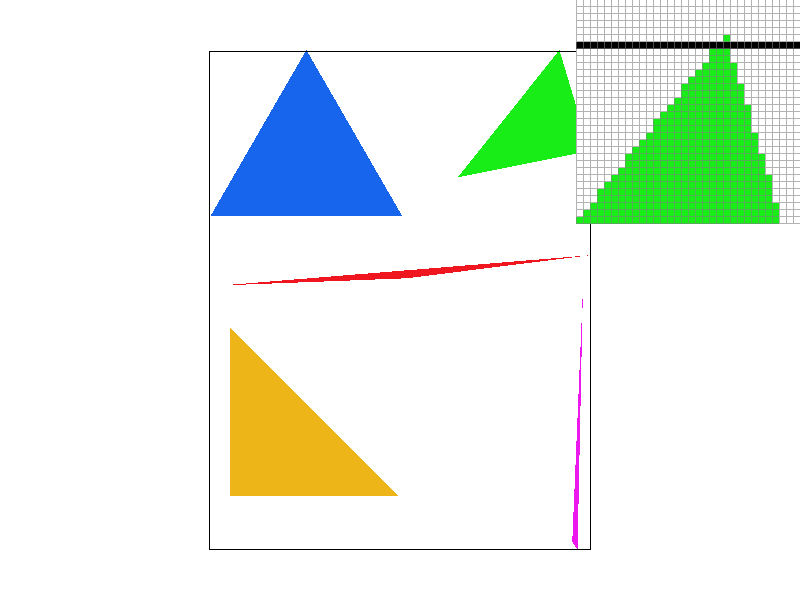
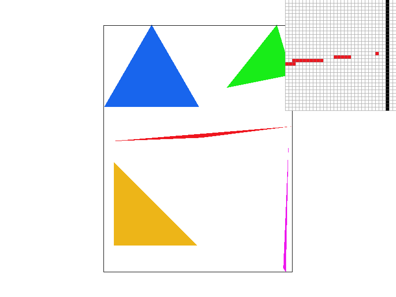
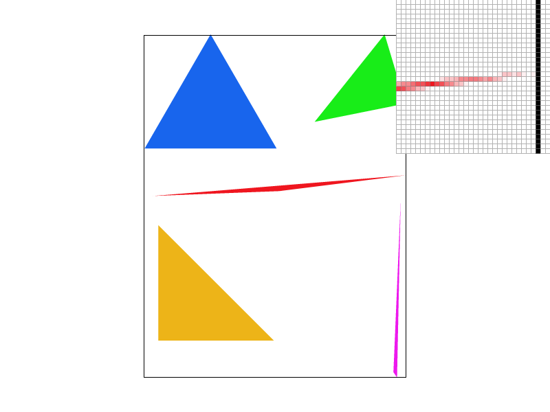
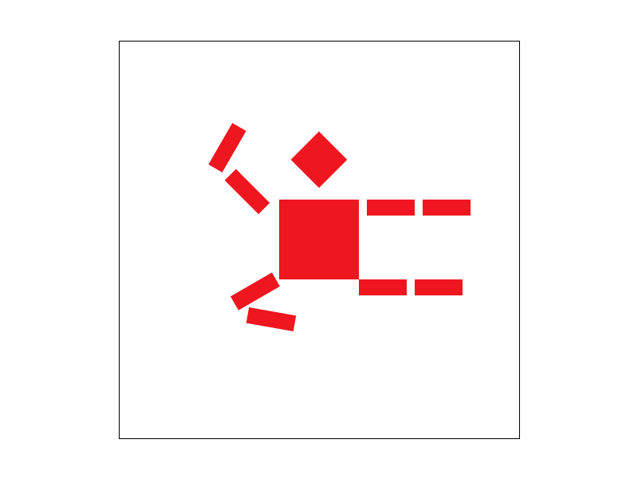
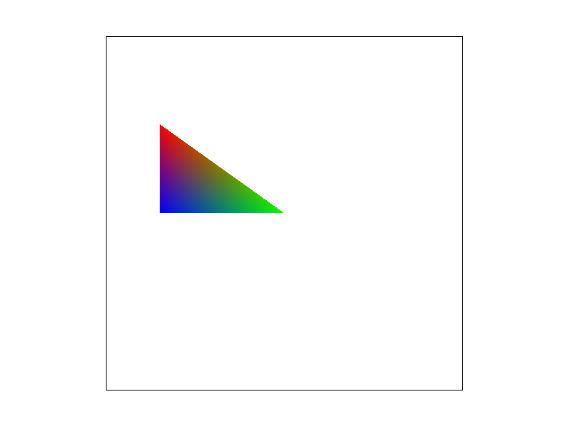
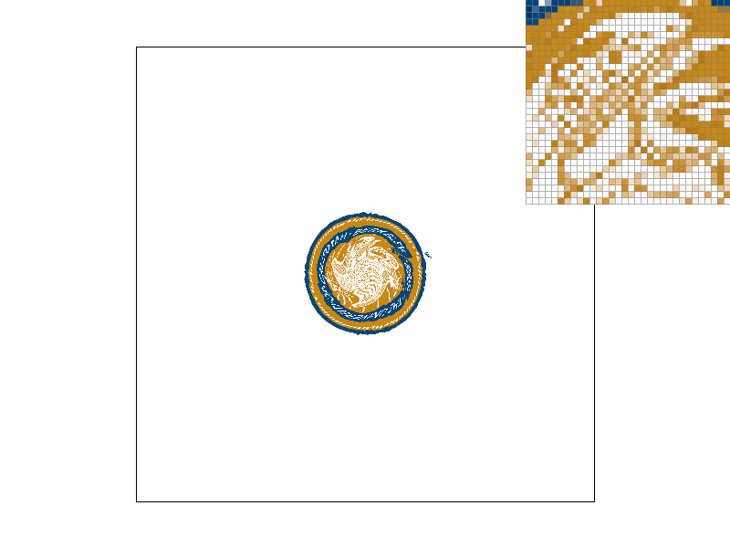
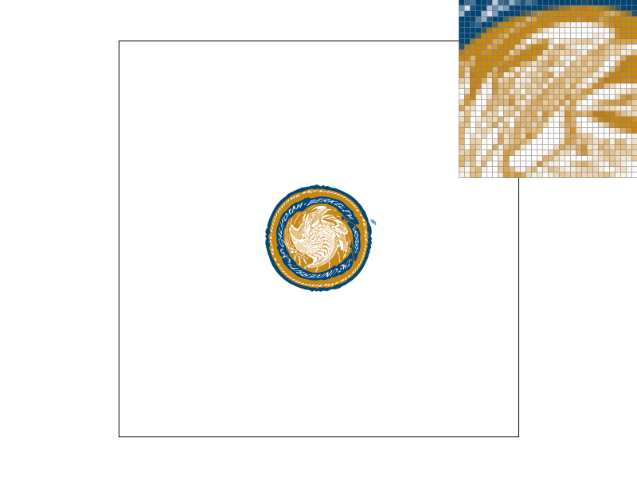
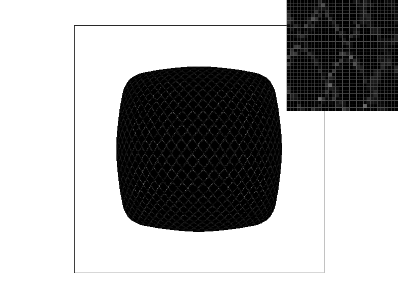
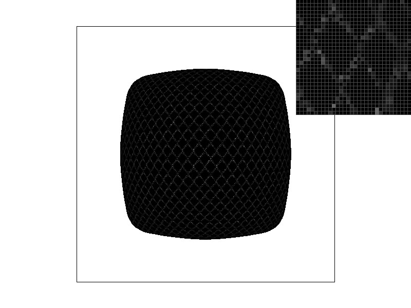

Overview
In this assignment four main topic of rasterization been implement:
1. Rasterizing triangle and transfrom tree
2. Antialiasing with super sampling
3. Barycentric coordinates and pixel sampling for texture mapping
4. Level Sampling to handle texture filtering and texture magnification problem
Section I: Rasterization
Part 1: Rasterizing single-color triangles
Check the order of the points of the triangle by (y2 - y0) * (x1 - x0) - (y1 - y0) * (x2 - x0)
Construct 3 equaction to inspect the points is within the triangle or not
.For each edge of the triangle we construct a vector that orthonormal with the edge and connect point with the edge corner and check the angle between the orthonormal vector
.If triangle conter-clockwise, equaction output >= 0, point within the same region of the ortho vector direction
.If triangle clockwise, equaction output <= 0, point within the same region of the ortho vector direction
When 3 equaction show points within the region, point inside the triangle
Sorted the point xi and yi, and only check the points within the rectangle [y_min, y_max] [x_min, x_max] of the triangle whick mean no worse than the bounding box of triangle
|

|
Part 2: Antialiasing triangles
The over all idea of the supersampling in rasterize the triangle is:
Cut up each points in the region into Sqrt(sample-rate) * Sqrt(sample-size) even size sub-points
.Size of sample_buffer := width * height * Sqrt(sample-rate) * Sqrt(sample-size)
.Every color element within the sample_buffer is defalt as background color
Inspect each sub-point within the triangle or not
.If the sub-point inside the region, chage the correspond sample-buffer color
.Under each (x,y) point of the sample-buffer, add up all of the subpoint color(include the background color) of the sub-point
.Take the average of the sub-points colors and add it to the correspond rgb_framebuffer_target so that some of the points that has small area inside the triangle can still appear in the graph in a blury color form
.(use extra memory and computation to lower the frequence of image to achive antialiasing)
One of the bug I engage is average the color inside the rasterize-triangle function
.The function can only handle one trangle's points in one call so to inclue the situaction that backgound and different layer of trianle stack up together
.Use extra memory to sample all the sub-points of the point in the buffer and average all of it together right before the transition to fram-buffer
|

|

|

|
In the sample rate = 1, we inspect points with out supersampling,
.Some of the points been pass through by the triangle's edge but the middle dot (x+0.5, y+0.5) are not within the region(Aliasing)
.When we increase the sample rate, thats mean each point been cut up into 4 or 16 small region
.Their middle point is place in the point space evenly, when inspect these sub-point, part of them been inclue into the triangle region, the pixil repond to the point can display in a lower grade color format to make the triangle look 'right'
Part 3: Transforms
|

|
Make the cubeman do a fly kick.
.Add rotation in each part of the legs and hands
.rotate by deire degree and translate the rotated body part to the desire position
.transform="rotate(deg)" to rotate parts in degree in counter clockwise
.transform="translate(dx dy)" to move the parts dx and dy away from the origin spawn position
Section II: Sampling
Part 4: Barycentric coordinates
|

|
Barycentric coordinates is given a triangle in 2D space, we can repersent points (x,y) that inside the trangle by a liner combination of triangle vertices A, B, C. Which is V = (a * A + b * B + c * C)
.a, b, c repersent how far point(x, y) is away from vertices (A, B, C)
.In the graph, each angle of the triangle repersent one of the RGB color, V would be the color combination of RGB inside this triangle

|
Part 5: "Pixel sampling" for texture mapping
When I want to display a patr of the texture onto the screen/window, I need to translate the cordinate of the screen to the cordinate of the texture.
.To achives this, I first having a triangle region with 3 vertices to display the texture
.Using Barycentric cordinate to compute the liner combination BC to repersent vectors in the triangle
.Using the BC linear function translate the cordinate in screen space(x,y) to cordinate in texture space(u,v)
.But the cordinate (u,v)(float)[0,1] are not always accurate to the actual samplable cordinate (u,v)(int)[texture size], here I used two pixel sampling methon, nearest and bilinear
Nearest is (u,v) * (textur width-1, texture height-1) to scale the cordiante to texture size and round float(u,v) to nearest int(u,v) which is the nearest samplabel point in the texture
.Nearest Sampling are lite weight to impliment but having issue to find point at sit right in the middle of multiple samplable points (0.5 always rount to 1)
Bilinear smapling are more accurate in compaire and cost a little bit more computation to achive
Scailing the (u,v) to the texture size and also using ceilling and trunic to find 4 or 2 cloest point around the (u,v) and calculate the weight average of these 4/2 points and out put the ideal point (u,v) to sample
|
|

|
With no super sampling, the texture are looks more sharper and clear in detail when implement linear compaire nearest becasue it can capture the texture more accurate
|

|
|
In the 16 sample per pixel, the different is not obious because the supersample filter the high frequience to make the texture more blury
Part 6: "Level sampling" with mipmaps for texture mapping
When we need to display a 3D space in to a 2D display, texture in differnt vision deptph will get compress or expand in a constant 2d space.
.When display texture at high depth, one pixil in the 2D space will respond to multiple of texture pixils because things in distance will tend to look smaller (texture been compress), and the aliasing effect will start to appear.
.When display texture at low depth(texture that right in front of the view point), the texture will scale up and for one pixil in 2D space only portion of the texture in one point will we display, and the textur will looks blury.
To handle this situaction, we are using level sampling method with mipmap data structure
.Store texture in different frequency in the mipmap, assign each frequency texture with level
.When display texture at low depth(close), we use low level (high frequency) texture so that it looks less blury
.When display texture at high depth(far away), we use hi level (low frequency) texture to achive antialiasing
Level sampling is a method to deside which level of texture to use when we samping texture in different screen cordiante
.Using barycentric coordinates to sample the target texture cordiante(x,y)->(u,v) and other two texture cordiante that one unit away from it (x+1, y)->(udx,vdx) ; (x, y+1)->(udy,vdy)
.So we can use this 3 texture cordiante to compute the ration beteen the sreen space distance and texture space distance to know the depth of the texture
.Knowing the depth of the texture we can pick the level the texture frequency to sample by differnet method
..Nearest level sampling is round the depth of the texture to the closeest level and sample it
..Liner level sampling is round the depth of the texture by flooring and ceilling.
..The front cloest level and back closeest level and sample both of the texture and compute the weighted total of two texture and return
Pixel Sample, Level Sample, Sample per pixel
Come to memory useage, Level sampling are better than sample per pixel because level sample only take 4/3 of the origin taxture memory to store the mipmap but Sample per pixel need (sample/pixel) of the origin taxture size to accompilshBut the antialiasing power wise sample per pixel are better than level sample, and level sample combine with pixel sample (Trilinear sampling) need 7 linear equaction/log/sqrt calculation but samples per pixel only take the average
|
|
|
|

|

|